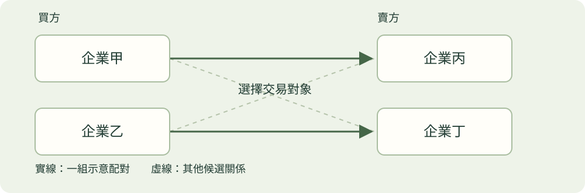
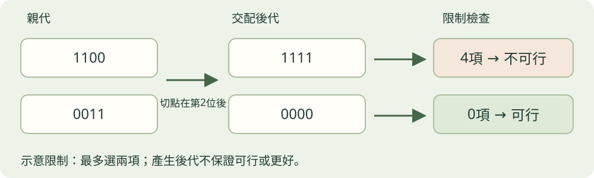
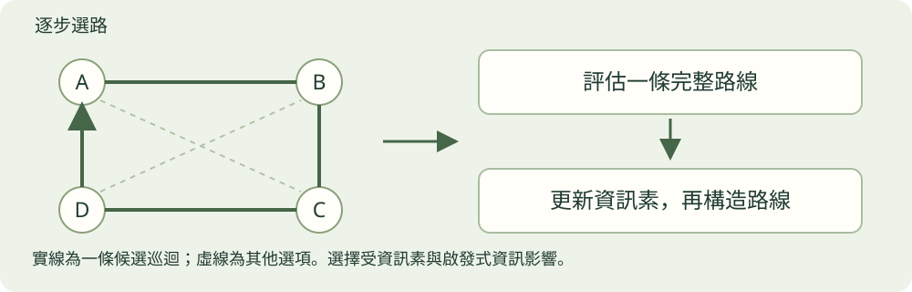
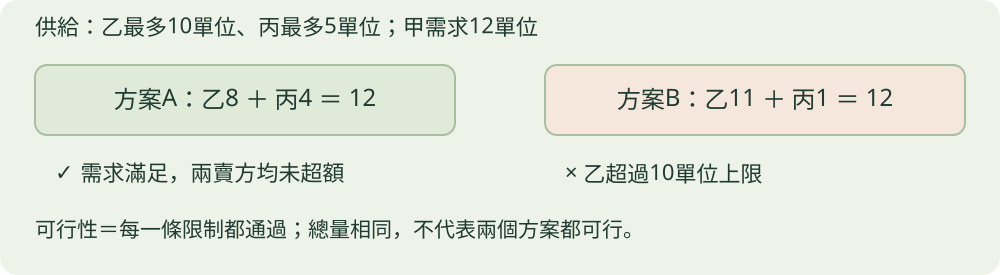
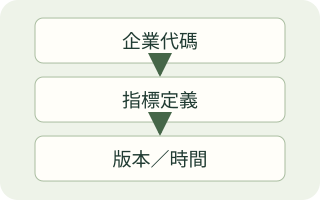
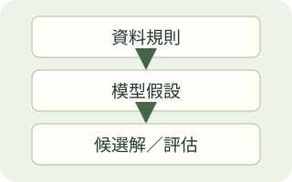
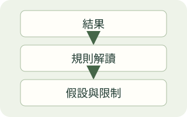

碳交易配對研究如何進行？
研究什麼？每一步要留下什麼？
在交易條件與供需限制下，尋找可比較的配對方案。
- 研究問題
- 資料
- 模型
- 搜尋方法
- 實驗評估
- 先把問題說清楚，再選方法。
- 每一步都要留下可檢查的輸入、假設與產出。

懶人包：先定義研究問題，再依資料建立模型，選方法並檢查證據。
配額移轉，不等於實際減排
為什麼會出現交易需求？
總量管制與交易結合排放額度限制與配額流通；額度不足可能形成購買需求。
- 移轉改變配額持有量；減排需要排放變化的證據。
- 交易商品、制度與適用期間要先對齊。

懶人包：配額移轉改變持有量；實際減排需要排放變化的證據。
配對方案要同時比較多種目標
向誰交易、交易多少，怎樣才算更好？
CM03第二年規劃四個方向，這是研究提案中的目標，尚不是實驗成果。
買方成本
希望較低
賣方利潤
希望較高
永續聲譽總和
希望較高
配對數
希望較多
- 某方案成本較低，另一方案利潤較高，可能互不支配；不一定只有一個最好答案。
懶人包：成本、利潤、聲譽與配對數可能互相取捨，不一定只有一個最好方案。
先整理資料，再說它能支持什麼
哪些欄位可用，哪些資訊仍然缺少？
- 保留原始版本
- 對照欄位與單位
- 檢查ID與粒度
- 建立研究樣本
可能已有
帳戶、日期、交易ID、單位種類、數量。
不能直接假定
成交價、當時供需、資格、聲譽與偏好。
- 同一交易ID可能有多列區塊，不能直接當成重複資料刪除。
產出成果：可追溯的樣本、欄位對照與清理規則。
模型連起資料、決策與限制
如何把資料變成可以求解的問題？
- 輸入資料
- 配對／交易量
- 資格與供需限制
- 計算各目標
- 同名符號不代表相同意義：是否配對與交易數量要區分。
- 輸入標示觀測、代理或模擬；缺資料不能直接解讀為沒有限制。
想一想上午做配對，能直接把當天收盤價當已知資訊嗎？點我看答案 ＋收起答案 −
若模擬當時決策，收盤價尚不可觀察；需改用當時可取得的資訊，或另交代研究假設。
產出成果：明列變數、目標、限制與假設的模型版本。
GA：重組一群候選方案
新方案如何產生，又怎麼留下？
基因演算法（Genetic Algorithm, GA）對一群編碼方案進行評估、選擇、交配與突變。
- 評估族群
- 選親代
- 交配／突變
- 評估與選存活者
↺ 未達停止條件 → 以新族群繼續。
- 新方案不保證更好或可行；限制檢查不能省略。

產出成果：候選方案與目標值；不能宣稱保證最佳。
ACO：逐步構造候選方案
搜尋記憶如何影響下一次選擇？
蟻群最佳化（Ant Colony Optimization, ACO）的早期Ant System，用資訊素與啟發式資訊引導機率選擇。
- 合法選項
- 逐步構造
- 評估方案
- 更新資訊素
↺ 未達停止條件 → 再構造一批方案。
- 理解上的差別：GA重組既有方案；這裡的ACO從選項逐步構造方案。
- 原文主要示範TSP；碳交易仍須另定編碼、評分與限制處理。

產出成果：搜尋到的方案與評估值，不是已驗證碳交易成效。
公平比較之前，先檢查可行性
怎麼知道方法有用，而不是只是跑出答案？
先驗可行性
交易資格、供需與數量是否滿足？
再比表現
共用測試情境，明列參數、計算預算、停止及重複設定。
限制結論
小樣本流程成功，不代表市場整體或方法普遍較好。

產出成果：可重現設定、比較結果與結論適用範圍。
留下能讓下一屆重做的研究
需要承接什麼，又要交付什麼？
第一年 → 輸入

索取指標定義、企業對照、版本與可用時間。
第二年 → 配對

保存模型、清理規則、候選解與評估紀錄。
第三年 → 後續研究

提供可追溯結果、假設與限制，供規則研究參考。
三張圖均為本站自製交接示意，依CM03年度脈絡與Wiki交接建議整理。
產出成果：有版本、定義與限制的交接材料。
研究不是直線：失敗就回到原因
在哪裡退回？回去要改什麼？
- 問題
- 資料
- 模型
- 方法
- 實驗
資料不足
回到來源與資料：補讀、補欄位或改樣本。
方案不可行
回到模型與方法：核對限制、編碼及處理方式。
比較不公平
回到實驗設定：對齊測試情境、預算與指標。
- 修改後，重查原問題與受影響項目；保存改了什麼、為何改。
產出成果：可解釋的修正紀錄，而不只是最後一組答案。
點兩側箭頭或左右方向鍵換頁 · Home／End到首尾 · 展開全文可閱讀或列印全部頁面 · 查看簡報製作流程圖